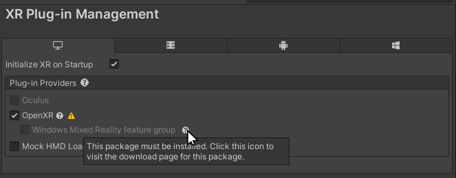
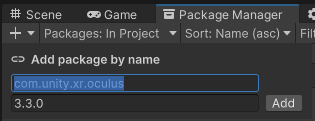

The Unity packages that support XRAn umbrella term encompassing Virtual Reality (VR), Augmented Reality (AR) and Mixed Reality (MR) applications. Devices supporting these forms of interactive applications can be referred to as XR devices. More info
See in Glossary development fall into two broad categories:
The Unity XR plug-in framework provides the basis for XR development in Unity. You can add support for an XR device to a project by installing and enabling the relevant XR plug-in. You can add or remove plug-ins to the project at any time.
Refer to XR Project set up for instructions on how to add XR plug-ins to your project using the XR Plug-in Management system.
Unity supports the following XR plug-ins:
| Plug-in | Supported devices |
|---|---|
| Apple ARKit | iOS devices |
| Google ARCore | Handheld Android devices |
| Magic Leap | Magic Leap 2 |
| Microsoft HoloLens | HoloLens, HoloLens 2 |
| Microsoft Windows Mixed Reality | Microsoft supported package for HoloLens and Windows Mixed Reality headsets (various manufacturers). Note: In Unity 2021+. use the OpenXR provider plug-in for Windows Mixed Reality. The previous WMR provider package is not supported beyond Unity 2020.3. Refer to Windows Mixed Reality support for more information. |
| Oculus | Oculus Rift, Meta Quest 2, Quest Pro |
| OpenXR | Any device with an OpenXR runtime, including Meta headsets, Vive headsets, Valve SteamVR, HoloLens, Windows Mixed RealityMixed Reality (MR) combines its own virtual environment with the user’s real-world environment and allows them to interact with each other. See in Glossary, and others. |
| PlayStation VR (available to registered PlayStation developers) | Sony PS VR and PS VR2 devices. Refer to PlayStation Partners for more information. |
| Apple visionOS XR Plugin | Apple Vision Pro |
Refer to XR Platform System Requirements for system requirements for developing XR projects in Unity.
Notes:
Unity’s XR packages build on the XR plug-in framework to add additional application-level features and developer tools.
The XR packages include:
| Package | Description |
|---|---|
| XR Plug-in Management | Adds Project SettingsA broad collection of settings which allow you to configure how Physics, Audio, Networking, Graphics, Input and many other areas of your project behave. More info See in Glossary for managing the platforms and plug-ins used by a Unity XR project. Refer to Project setup for information about managing XR plug-ins. |
| AR Foundation | Provides cross-platform AR features, such as plane detection, meshing, and object tracking. Required for developing AR applications with the Unity XR packages. |
| XR Interaction Toolkit | Provides interaction components for adding controller-based interaction and manipulation, UI(User Interface) Allows a user to interact with your application. Unity currently supports three UI systems. More info See in Glossary interaction, and movement. Supports VR, MR, and AR. |
| XR Hands | Provides an interface for accessing hand tracking data in an XR application. You must also use a provider plug-in that supports hand tracking, such as OpenXR version 1.7. |
| PolySpatial visionOS packages | A set of packages that provides support for VR and AR/MR apps on the Apple Vision Pro. Requires a Unity Pro, Enterprise, or Industry subscription. |
| Unity Mars | Provides components and tools for adapting AR content to the user’s surroundings. For example, it supplies a standard way of querying the environment to find suitable locations for adding your digital content to the sceneA Scene contains the environments and menus of your game. Think of each unique Scene file as a unique level. In each Scene, you place your environments, obstacles, and decorations, essentially designing and building your game in pieces. More info See in Glossary. Requires a license that includes Unity Mars. Refer to Unity Mars for information about license requirements. |
| XR Core Utilities | Contains software utilities used by other XR plug-ins and packages. Typically installed in your project as a dependency of other XR packages. |
| XR Legacy Input Helpers | Contains software utilities related to XR input. This package is being phased out, but is still installed as a dependency by some XR packages. |
Note: If you use the AR Foundation package in a project, the version numbers of AR Foundation, ARCore, and ARKit must all match. In other words, if you are using version 4.2 of the AR Foundation package, you must also use version 4.2 of the ARCore and ARKit packages.
The following information describes the changes to XR packages in Unity 2022.3:
Support for the Apple visionOS platform is available in Unity 2022.3.
You can develop windowed apps with only the visionOS platform support module installed. A windowed app operates in a single, flat window, much like a window on a desktop platform. A user’s gaze and hand gestures are translated into touch input by the visionOS operating system (direct access to the gaze and hand tracking data is not supported in this mode.) You can create or port non-XR Unity applications and games to the Apple Vision Pro device as windowed apps. Refer to visionOS platform for more information.
To develop XR apps (VR, AR, or MR), you must install the visionOS and PolySpatial packages. You must have a Unity Pro, Enterprise, or Industry subscription to use these packages. Refer to the PolySpatial visionOS documentation for more information.
Developing for the Magic Leap 1 is not supported after Unity 2020.3.
| Unity version | Package version | Device model |
|---|---|---|
| Unity 2019.4–2020.3 | com.unity.xr.magicleap@6.4 | Magic Leap 1 |
| Unity 2021.1–2022.1 | No version supported. | None |
| Unity 2022.2+ | com.unity.xr.magicleap@7.0 | Magic Leap 2 |
Use the OpenXR provider plug-in to develop for Windows Mixed Reality devices.
To configure the OpenXR provider plug-in for Windows MR:
In the Unity Editor, open Edit > Project Settings
Select the XR Plug-in Management category.
Choose the Windows, Mac, Linux tab.
In the Plug-in Providers list, enable OpenXR.
The OpenXR package installs, if necessary.
Click the Help icon next to the Windows Mixed Reality feature group option to open the Microsoft Mixed Reality OpenXR Plugin setup instructions.

Follow the instructions to install the Microsoft Mixed Reality OpenXR plug-in. (The Microsoft Mixed Reality Feature Tool program lists the plug-in under its Platform Support category.)
Enable the Windows Mixed Reality feature group.
After you have installed the plug-in, review the OpenXR settings under XR Plug-in Management.
Meta has dropped support for the Quest 1 device as of version 51.0 of their Platform SDK. The Platform SDK is included in version 51.0 of the Oculus Integration package on the Unity Asset StoreA growing library of free and commercial assets created by Unity and members of the community. Offers a wide variety of assets, from textures, models and animations to whole project examples, tutorials and Editor extensions. More info
See in Glossary. To continue developing for the Quest 1, you must use version 50 or earlier of the Oculus Integration package. If needed, you can download this version from the Meta Quest downloads page: https://developer.oculus.com/downloads/package/unity-integration/50.0.
In addition, version 4+ of the Oculus provider plug-in package no longer supports Quest 1 development. You must use an earlier version of the Oculus provider plug-in to continue developing for the Quest 1. Because Oculus 4.0 is the verified packageWhen a package passes release cycle testing for a specific version of Unity, it receives the Verified For designation. This means that these packages are guaranteed to work with the designated version of Unity.
See in Glossary version on Unity 2022.3, you must downgrade to the lower package version.
To install version 3.3.0 of the Oculus package:
Open your project in the Unity Editor.
Click Oculus XR plug-in version 3.3.0.

The Editor Package Manager window opens, showing the Add package by name dialog
Click Add to install the last compatible version of the plug-in.
Alternately, you can open the Add package by name dialog manually and enter the package ID and version. You can also edit the project’s package manifestEach package has a manifest, which provides information about the package to the Package Manager. The manifest contains information such as the name of the package, its version, a description for users, dependencies on other packages (if any), and other details. More info
See in Glossary file directly to reference the required package version:
"com.unity.xr.oculus": "3.3.0"